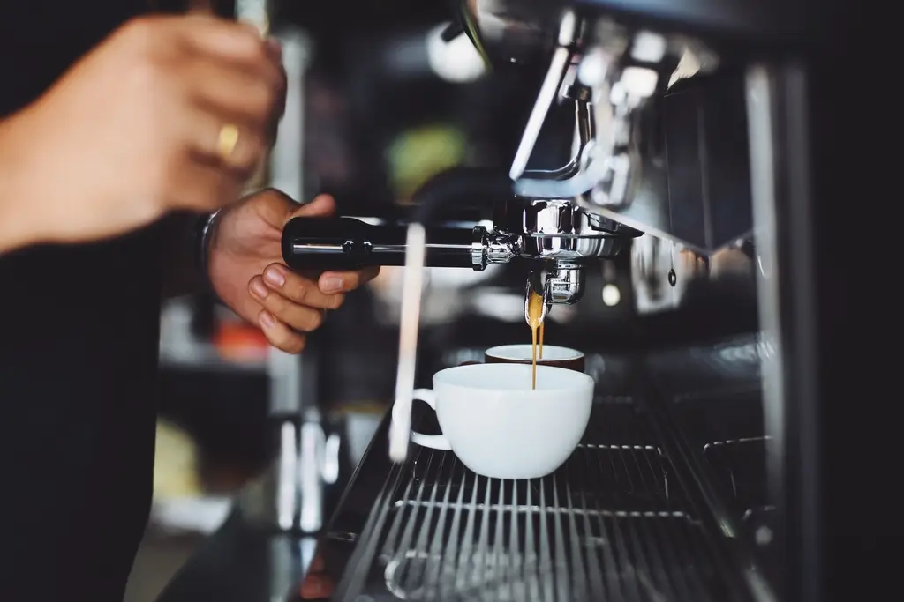

Lodos: güneybatıdan esen rüzgârın adı.
12 kg'lık tek kazan ısınır.
Lodos harmanı, Guji, Huila, Türk kahvesi kavrumu.

Kalkışa 6 dakika kala gelene sıra yok.
Kemankeş Caddesi'nden Karaköy iskelesine.
Hafta içi 07.00–19.00.